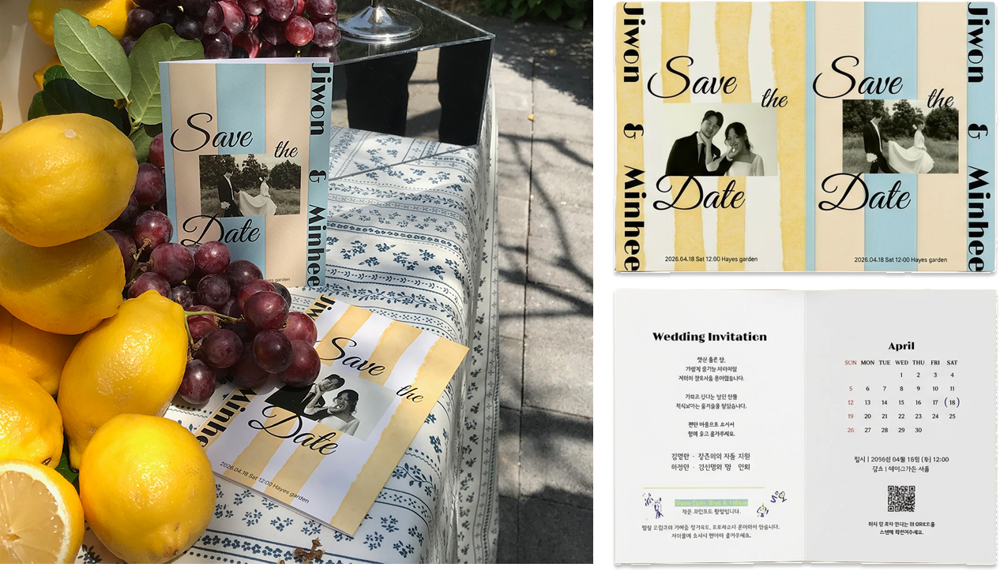
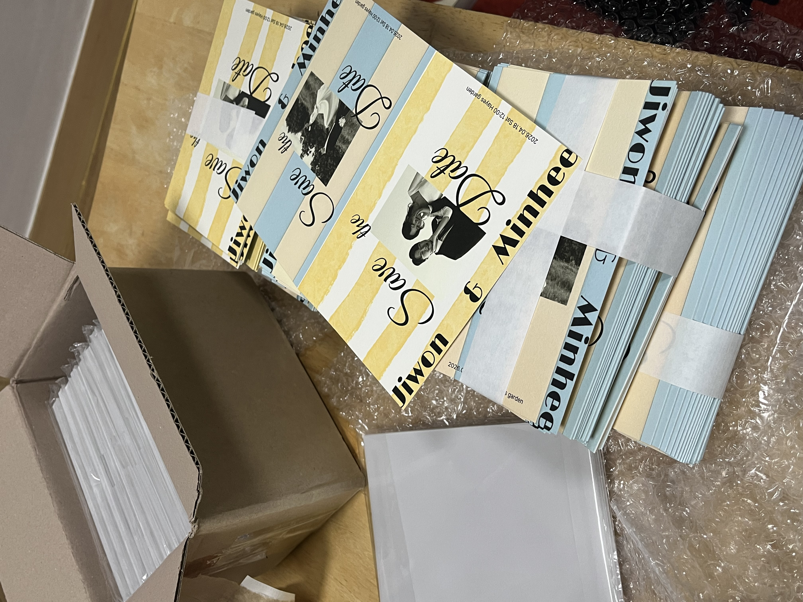
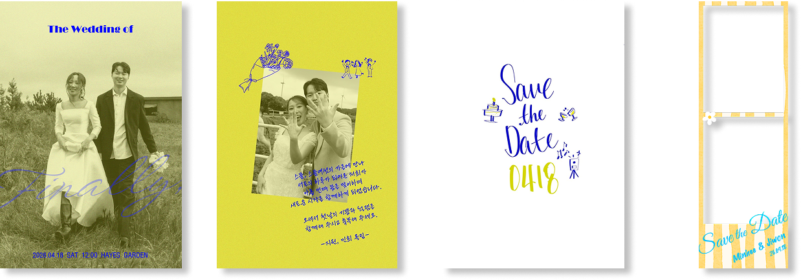
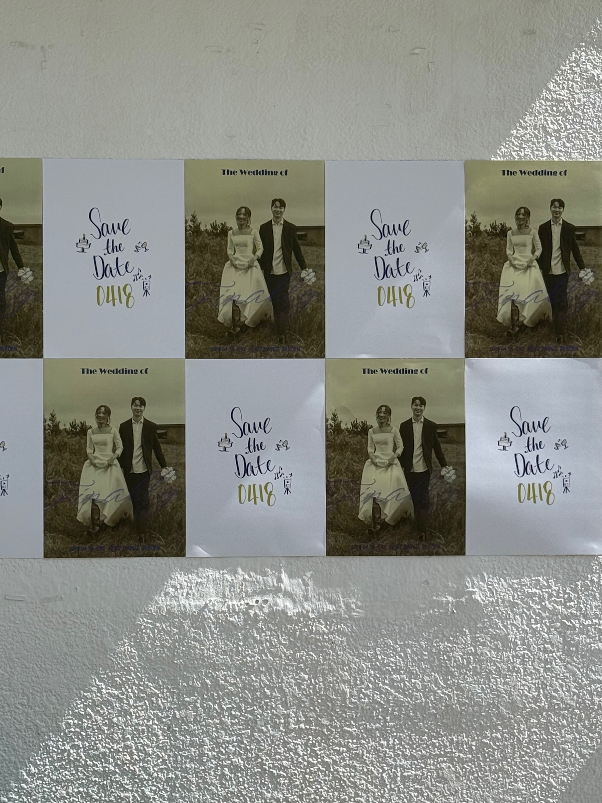
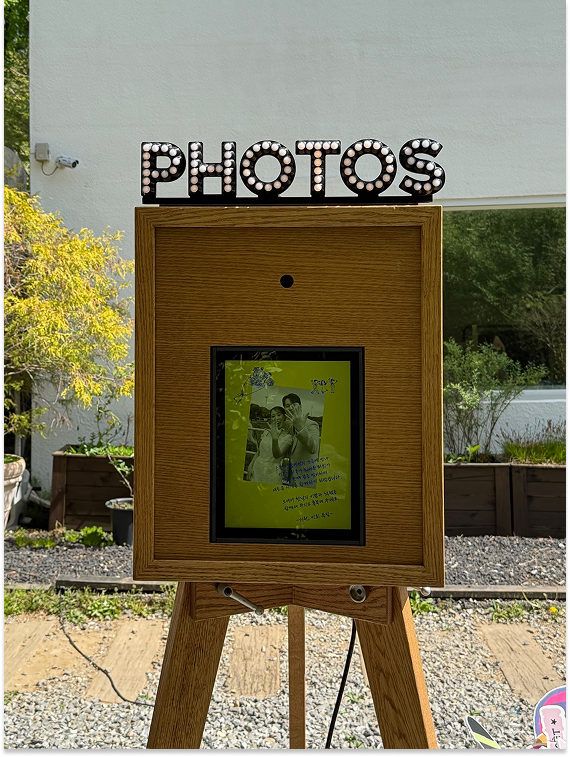
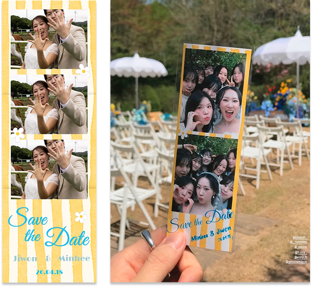

Logo
쉼표를 핵심 브랜드 심볼로 활용해 '쉼날'의 의미를 직관적으로 표현하고, 미니멀한 형태와 부드러운 곡선으로 편안한 브랜드 이미지를 담았습니다.
웨딩 브랜딩 및 브랜드 홍보물·편집 디자인
핵심 컨셉을 중심으로 청첩장부터 모바일, 포스터, 포토부스까지 동일한 비주얼 아이덴티티를 적용했습니다.
하나의 디자인 언어를 다양한 매체와 공간으로 확장해 일관된 웨딩 브랜딩 경험을 구축했습니다.


블루와 옐로우를 메인 컬러로 설정해 맘마미아 특유의 밝고 자유로운 무드를 시각화했습니다. 빈티지한 그래픽과 스트라이프 패턴을 활용해 야외 가든 웨딩의 따뜻한 분위기를 청첩장 전반에 담아냈습니다.

모바일에서도 하나의 웨딩 브랜드 경험이 이어질 수 있도록 설계했습니다. 빈티지한 그래픽과 Mamma Mia OST를 활용해 감성적인 몰입감을 더하고, 포스터 스타일의 타임라인과 안내 이미지를 구성해 결혼식의 분위기를 미리 경험할 수 있는 디지털 브랜딩 콘텐츠로 제작했습니다.

컬러와 빈티지 그래픽을 포스터, 포토부스 화면, 촬영 템플릿까지 일관되게 적용해 공간 전체의 브랜드 아이덴티티를 구축했습니다. 이미지 페어링을 통해 시각적 연결성을 높이고, 하객들이 자연스럽게 사진을 남기고 공유할 수 있는 참여형 포토존 경험을 기획했습니다.




쉼날테라피 — 브랜드 아이덴티티 및 편집 디자인
'쉼을 알게되는 공간'이라는 의미를 담은 체형 관리 전문 마사지샵 '쉼날테라피'의 브랜딩과 홍보 및 가게 내 사용되는 인쇄물을 디자인했습니다.
쉼표를 핵심 브랜드 심볼로 활용해 '쉼날'의 의미를 직관적으로 표현하고, 미니멀한 형태와 부드러운 곡선으로 편안한 브랜드 이미지를 담았습니다.